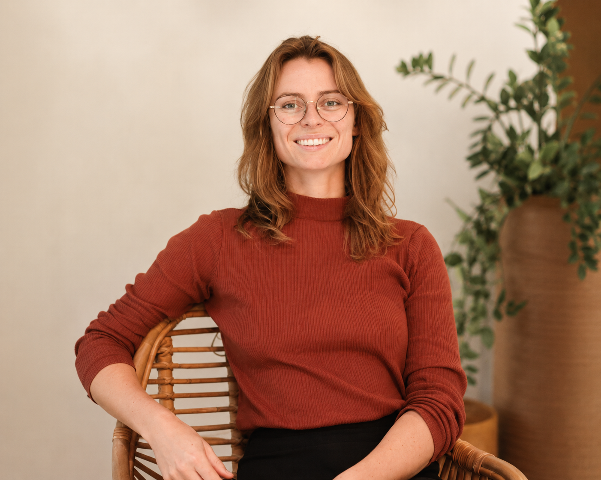

MSc Strategic Management — Entrepreneurship
Thesis: How actors in their ecosystem influence the ability of enterprises with an upcycling business model to upscale
I work where operations, technology and people need to come together effectively.

I work at the intersection of operations, technology and organizational growth.
My experience ranges from operational leadership to technology implementation in sectors such as R&D, facility management, security and smart mobility.
I have worked on projects involving workflow automation, AI camera systems and access control technology while also being responsible for operations, HR, sales, process improvement and scaling teams.
Over the years, I have helped organizations build new operational structures, improve existing workflows and implement technology into day-to-day operations. I enjoy understanding both the technical and human side of organizations: from the people developing technology to the teams and end users working with it daily.
I learn quickly and enjoy stepping into unfamiliar environments. I am motivated by complexity, pressure and building structure where it does not yet exist.
Alongside operational and technical experience, I developed a strong commercial mindset through various sales-related roles early in my career. This still shapes the way I communicate, solve problems and approach opportunities today.
I am most motivated by environments where technology, operations and people need to work together effectively.
A selection of projects involving operational leadership, technology implementation, team rebuilding and stakeholder alignment. The first three cards contain more extensive case studies; the smaller cards highlight additional work.
Security technology, physical security, process design and stakeholder communication in a complex 24/7 multi-tenant environment.
A large multi-tenant building with approximately 250 tenant organizations and 1,500 users operated with 24/7 access, while on-site staff and reception were only present during office hours. The building had multiple entrances and emergency exits, ongoing renovation activities in the surrounding area, aging infrastructure and increasing security concerns following multiple burglaries.
The operational environment was complex due to the combination of high user volume, limited financial resources, deferred building maintenance and tensions between multiple stakeholders involved in the building operations and ownership.
Together with the CEO and external partners, we defined and coordinated a broad set of operational and technical security measures. My role focused on translating these measures into operational workflows, coordinating execution by external parties, onboarding internal teams into new processes and managing communication towards tenants and stakeholders.
I also played an important role in aligning operational processes with the building’s access control infrastructure, partly based on earlier experience with a CRM migration involving custom access control integrations.
The immediate challenge was responding to multiple burglaries and increasing concerns among tenants regarding the safety of the building.
At the same time, there were underlying structural challenges, including outdated building infrastructure, inconsistent adherence to house rules by users, fragmented stakeholder responsibilities and operational limitations caused by the scale and accessibility of the building.
The project required balancing security, accessibility, customer communication and operational continuity while maintaining trust among tenants.
The implemented measures included both operational and technical improvements.
On the technical side, a new camera surveillance recorder and monitoring software were implemented using the existing camera infrastructure. Motion detection rules were configured for specific zones and time windows, and an external surveillance partner was contracted for nightly monitoring.
On the operational side, stricter access control policies were introduced, temporarily limiting building access to the main entrance in order to centralize monitoring. Mechanical security of physical doors throughout the building was improved and collaboration with local law enforcement was intensified.
New internal processes were designed and implemented around key management, building closing procedures and security reporting. Internal teams were onboarded into these workflows and monitored on execution consistency.
In parallel, communication structures towards tenants were strengthened through digital communication channels, direct customer contact and stakeholder meetings. Detailed reporting was introduced to structurally document completed actions, identified risks and outstanding responsibilities between involved stakeholders.
Additionally, we cleaned and restructured the access control database, including outdated data originating from previous software migrations and integrations.
The implemented measures helped restore trust among tenants and demonstrated that security concerns were being actively addressed.
The combination of operational measures, surveillance improvements and collaboration with law enforcement contributed to identifying the individual responsible for the burglaries. Following the implementation period, burglary incidents appeared to stop for a significant period of time.
The project also resulted in more structured security processes, clearer operational responsibilities and improved communication between operational teams, tenants and external stakeholders.
Rebuilding operational teams, designing software-supported workflows and restoring stability during organizational change.
A multi-tenant coworking and real estate operation was going through a period of significant organizational instability. Frequent management changes, uncertainty about the future of the organization and the introduction of new software systems had resulted in high employee turnover and declining operational stability.
At the time I joined, several employees had already resigned or were close to burnout, while operational quality and customer satisfaction were under pressure.
As location manager, I was responsible for the operational performance of the building and the management of teams across sales, facility management, helpdesk, events, administration and account management.
My responsibilities included recruitment, onboarding, operational coordination, process implementation and day-to-day team management. During periods of understaffing, I also performed many operational tasks directly while continuing to coordinate the broader operation.
The organization faced a combination of operational and organizational challenges.
The operational team had largely disappeared due to turnover and uncertainty, while the remaining employees required onboarding, structure and support. Several newly assigned employees from other departments were not a sustainable fit for the operational environment, resulting in additional restructuring and recruitment rounds.
At the same time, major software and workflow changes were being implemented, while many existing automations and operational processes were either unstable or no longer functioning correctly.
The challenge was not only to rebuild the team, but also to restore operational continuity and customer trust while continuing daily operations.
Over time, approximately 12 employees and interns were recruited, onboarded and integrated into newly structured operational workflows.
Operational processes were redesigned and standardized across sales, facility management, helpdesk and customer operations. CRM systems, workflow automations and access control systems were implemented and improved incrementally.
Because many existing automations proved unreliable in practice, several workflows were temporarily reverted to manual processes first. This allowed employees to fully understand the operational logic behind the systems before gradually reintroducing automation and optimization.
Within the CRM environment, operational software pipelines were designed to guide employees step-by-step through their work processes. While marketing-related lead funnels were developed together with external partners, the operational logic behind the workflows — including sales follow-ups, administrative actions, operational handovers and task structures — was designed and implemented by me inside the system.
Examples included automated lead qualification and scheduling flows where leads could submit their requirements online and directly schedule meetings with the sales team.
Alongside process implementation, significant attention was given to onboarding, coaching and operational guidance to enable teams to independently manage daily building operations.
Over time, the operational organization became significantly more stable and autonomous again.
Customer feedback indicated that operational quality, team stability and service levels had improved considerably compared to the period before the organizational changes. By the end of my involvement, the operational teams were capable of running the building largely independently within the newly implemented structures and workflows.
Project recovery, system redesign, stakeholder alignment and renegotiation in a technically complex robotics R&D environment.
An R&D project focused on the development of an autonomous mobile robot capable of navigation, environmental detection and automated task execution.
The original system design aimed to combine autonomous navigation, radar-based sensing, environmental mapping and AI-driven interpretation into a highly advanced solution. The project involved multiple technical disciplines, including embedded systems, electronics, mechanics and UI/UX development.
At the time I took over the project management responsibilities, the collaboration between the client and development teams had become increasingly difficult due to delays, unclear expectations and growing technical complexity.
I took over the operational coordination of the project from a previous project manager and became responsible for aligning communication between the client, management and four technical teams across embedded systems, electronics, mechanics and UI/UX.
My role focused on project coordination, stakeholder communication, milestone preparation and helping technical and non-technical stakeholders align around realistic project expectations.
As the project progressed, I initiated additional market and competitor research to better understand how similar autonomous systems were being approached in practice. Based on these analyses and field visits, I became increasingly convinced that the original technical direction and collaboration structure were no longer viable.
I played an active role in convincing both the client and internal teams that a fundamental redesign and restart of the project would be necessary. In parallel, I pushed for renegotiating the commercial collaboration model into a structure that created more transparency, trust and operational stability for both parties.
The original project scope and technical roadmap proved to be unrealistic both technically and operationally.
The initial system architecture relied heavily on AI-driven environmental interpretation and highly advanced autonomous mapping approaches, while practical limitations in the real-world environment made parts of the proposed solution difficult to implement reliably. At the same time, the intended user experience did not align well with customer expectations regarding simplicity and deployment.
Communication between the client and technical teams became increasingly strained. Important assumptions made during the early project definition phase had not been aligned properly, partly because technical and non-technical stakeholders interpreted project goals differently.
As development delays increased, trust between both parties deteriorated further. The client became reluctant to continue payments while teams internally continued working on features that later turned out not to be critical to the actual operational needs.
The existing project structure also created unhealthy incentives, where development was tied to milestone-based payments while technical uncertainty remained extremely high.
Initially, the existing project roadmap and milestone structure were continued while gaining a deeper understanding of the technical and organizational situation.
Through intensive communication with the individual technical teams and the client, the underlying issues within the project became increasingly visible. Additional market research, competitor analysis and field visits were performed to better understand existing solutions and practical implementation approaches.
Following these analyses, it became clear that the original technical direction required a fundamental redesign. Together with company leadership and the technical teams, we decided to restart large parts of the project and redesign the system architecture from the ground up.
The redesigned approach focused on a significantly simpler and more reliable system architecture with reduced dependency on AI-driven functionality. Instead of maximizing technical complexity, the new design prioritized practical usability, reliability, sensor integration and incremental improvements. This resulted in a system that was more realistic to develop, easier to maintain and less vulnerable to operational failure.
Alongside the technical redesign, major changes were made to the commercial and operational collaboration structure. I helped drive the transition from a milestone-based outsourced development model towards a more transparent collaboration structure where technical personnel worked closely together with the client on-site based on hourly engagement.
This improved visibility into the development process, increased trust between stakeholders and created significantly more operational and financial stability for the development organization.
I also drafted a new project roadmap and helped align technical planning with more realistic development expectations and communication structures.
The project was successfully repositioned with a more realistic technical architecture, improved customer alignment and a significantly healthier operational collaboration structure.
The redesigned system architecture formed the foundation for the continued long-term development of the robot, with later development iterations continuing to build on the redesigned approach.
The client relationship recovered and the renegotiated collaboration structure became financially important for the continuity of the organization.
As the collaboration structure matured and the client became more directly involved in day-to-day project coordination, my own role within the project gradually became less central — which was ultimately a positive sign that the project organization itself had become more stable and self-sustaining.
The project also created important internal lessons around stakeholder communication, agile development, expectation management and the importance of balancing technological ambition with operational realism.
Troubleshooting and stabilizing a wireless cloud-based access control system for a 24/7 multi-tenant building.
A multi-tenant building with approximately 700 users and 24/7 access experienced reliability problems with its wireless cloud-based access control system. I recreated a pilot setup, worked directly with the overseas supplier and trained on-site teams to manage the system autonomously.
After further analysis, the root cause was identified as a networking and gateway communication issue. By implementing wired network connections for the gateways, the system became significantly more stable.
Coordinating an AI-supported camera analytics pilot and dashboard for operational usage insights.
Coordinated a pilot project involving AI-supported camera analytics and a monitoring dashboard designed to generate operational insights from real-world location usage.
The system used AI-based visual detection to identify and count people in a defined outdoor environment. The dashboard provided insights into usage patterns, peak moments and operational outliers.
Building a regional stakeholder network around a shared smart mobility innovation roadmap.
Supported the development of a regional innovation collaboration focused on creating a shared smart mobility roadmap between public institutions and private organizations.
I approached and interviewed approximately 60 organizations, documented insights in the CRM, secured external funding for process facilitation and organized a well-attended kickoff event.
My academic background combines business, entrepreneurship and interdisciplinary problem-solving with a strong international focus.
I completed a Liberal Arts & Sciences bachelor with a major in Business & Economics, followed by a Master’s in Strategic Management with a specialization in Entrepreneurship. I deliberately chose an interdisciplinary and international study environment because I wanted to work with people from different cultures, perspectives and academic backgrounds.
During my studies, I developed a broad foundation across organizational strategy, economics, innovation and management while also learning how to quickly understand unfamiliar domains and connect different fields of expertise.
Part of my studies included an exchange semester at Monash University Malaysia, which further strengthened my interest in international environments and cross-cultural collaboration.
Thesis: How actors in their ecosystem influence the ability of enterprises with an upcycling business model to upscale
Thesis: Performance feedback in project management: A study of managerial responses to negative performance feedback
Previous organizations and roles. References available upon request.
Location Manager
Location Manager
Operational Manager
Business Developer
HR, Finance, Administration & Reception
Assistant to the Academic Director
I enjoy conversations about operations, technology, entrepreneurship and organizational change.
If you are working on a challenge where people, processes and technology need to come together, I am open to exchanging ideas. This can be about an interim assignment, a consulting question, a potential collaboration or simply an introduction.